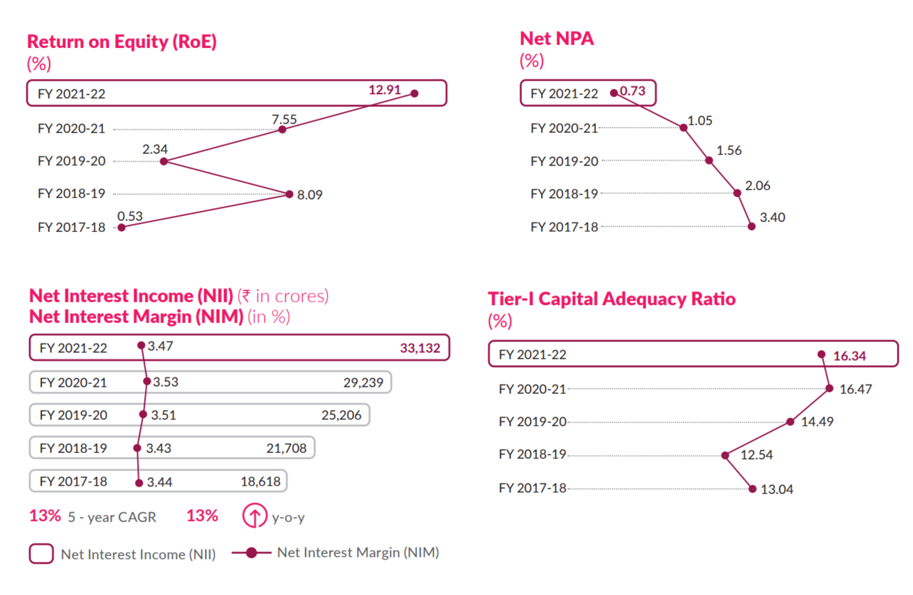
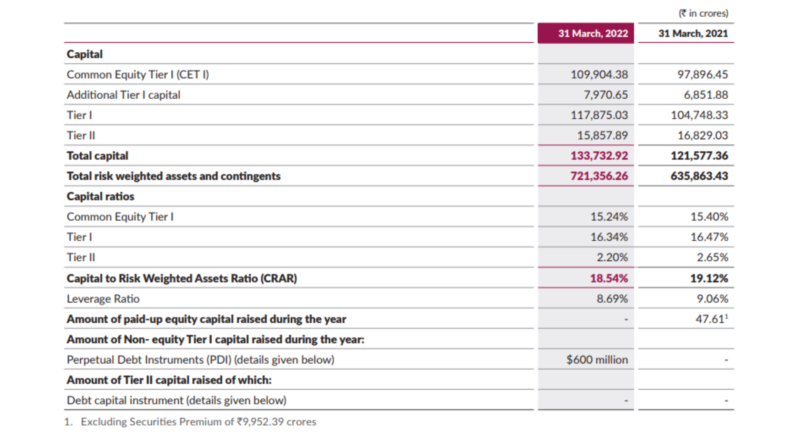
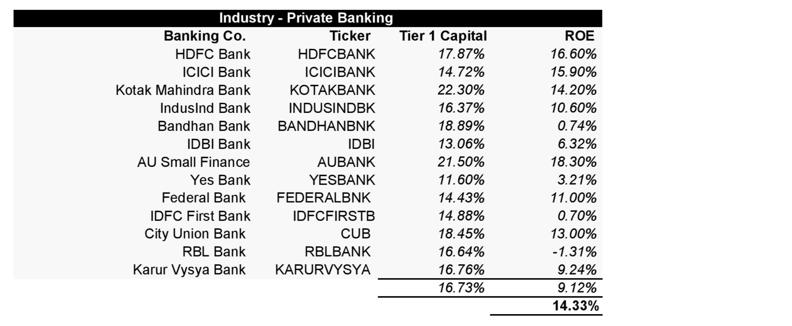
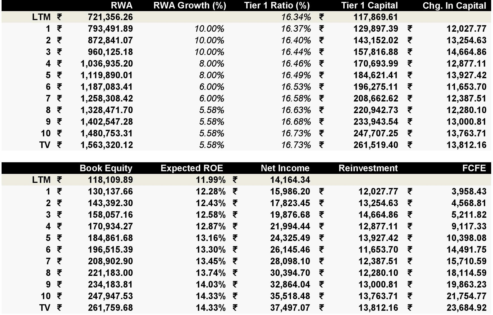
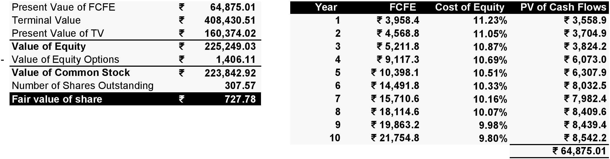

Axis Bank - Third Largest Private Bank in India
Axis Bank is involved in the entire spectrum of financial services to customer segments covering Large and Mid-Corporates, MSME, Agriculture and Retail Businesses. The credit growth is expected to hit 10% in 2022-23 and bank credit stood at ₹116.8 lakh crore (US$ 1.56 trillion) on 31st December 2021 (Source: RBI). Axis Bank earns retail fees from various mediums. Retail cards account for 22% of fees
Axis Bank has 70% of new savings accounts were sourced through tab banking in FY22. 78% credit cards issued digitally. The bank has a 15% share in UPI transactions, and more than 31 crore customer VPAs registered as on 31 March, 2022
Axis Bank is the 3rd largest private sector bank in India. Their Tier 1 Capital Ratio is 16.34% in FY22 while the industry's Tier 1 Capital Ratio is 16.73%. The tier 1 capital ratio is the equity capital and disclosed reserves divided by its total risk-weighted assets. It is a key measure of a bank's financial strength that has been adopted as part of the Basel III Accord on bank regulation.
Axis Bank's Financial Highlights: To check whether a bank is doing well or not, I usually check the Return on Equity (ROE), Net NPA % (Net Non-Performing Assets %), Net Interest Margin (%) and Tier 1 Capital Adequacy Ratio (CET1 Ratio). The four numbers are pretty good at gauging what's happening within a bank.
Return on Equity has been all over the place from the last 5 years, 12.91% in FY22. Net NPA % has been consistently decreasing from 3.4% to 0.73%, which is a good thing as Axis Bank has become more cautious while distributing bad loans. Net Interest Margin has been stable at 3.47% (in FY22). And the major advancement for Axis Bank has been their Tier 1 capital ratio which is 16.34% in FY22.

Axis Bank Business Segments: Axis Bank is involved in Retail Banking and Wholesale Banking. In Wholesale Banking, the corporate loan was ₹230,738 crores as at the end of FY2022, up 4% over FY21, with a healthy mix of 34/66 between short-term and long-term loans. In Retail Banking, the domestic retail loans grew 21% in FY22 to ₹3,97,568 crores, driven by home loans, loan against property and small business banking. Axis Bank also own subsidiaries (Axis Asset Management Company, Axis Securities, Axis Trustee Services, Axis Capital Ltd) which mostly provides financial services like broker services, mutual funds management etc.
Regulatory Capital: Axis Bank has been focusing on increasing the proportion of lower Risk Weighted Assets (RWA). The Risk Weighted Assets (RWA) to Asset ratio improved from 64% as at the end of FY21 to 61% at the end of FY22. Axis Bank’s overall capital adequacy ratio (CAR) under Basel III stood at 18.54% at the end of the year, well above the benchmark requirement of 11.50% stipulated by Reserve Bank of India (RBI). Of this, the Common Equity Tier I (CET I) CAR was 15.24% (against minimum regulatory requirement of 8.00%) and Tier I CAR was 16.34% (against minimum regulatory requirement of 9.50%). As on 31 March, 2022, the Bank’s Tier II CAR under Basel III stood at 2.20%.

My Narrative and Valuation
Right now, these might look all over the place. Here is my narrative after gauging the fundamentals. I will be doing a Equity (FCFE) Valuation of Axis Bank:
1) The Industry:Below I have taken the average ROE (Return on Equity) based on top 4 private banks (excluding Axis Bank) and main competitors of Axis Bank. I believe it's a more reliable number rather than taking an average ROE of all private banks.

2) Growth in Risk Weighted Assets: It's not rocket science! I just took Axis Bank upto HDFC Bank levels in the next 10 years. HDFC Bank is a top private bank in India with risk weighted assets close to ₹14 lakh crores. From year 6, I have given Axis Bank a growth equal to inflation. So, basically, it's a five year growth period in RWA. At Year 10, Axis Bank reaches to around ₹14.8 lakh crores which is pretty close to HDFC Bank's RWA in FY22. Overall, I have given risk weighted assets a CAGR of 7.46%
3) Tier 1 Capital Ratio: The industry average Tier 1 capital ratio is 16.73%, which is pretty close to Axis Bank's current Tier 1 %. But, in the back on my mind, I know they haven't maintained this ratio well in the past, as you can see in the financial highlights above. It's a risk when I say they are going to maintain their ratio, let alone increase a tad bit more upto the industry average.
4) Expected Return on Equity (ROE): The average ROE (Return on Equity) based on top 4 private banks (excluding Axis Bank) and main competitors of Axis Bank is 14.33%. I am helping Axis Bank reach that number. At the back of my mind, Return on Equity is a number that has been all over the place. I do think it's a bad idea if I take historical averages of their ROE and work with that. Axis Bank wants to make their business better, they need to atleast lie within industry averages.
5) Cost of Equity: I used CAPM model to find out the Cost of Equity. Risk Free Rate (5.58%), Axis Bank's Beta (1.43) and Equity Risk Premium (3.96%). Cost of Equity comes out to be 11.23%.


Based on the narrative I explained above, I came up with a fair value of ₹727.78 per share. Axis Bank's Stock is trading at ₹715.55 per share (July 21, 2022).
Thank you for reading! Check out my valuation by downloading the DCF Axis Bank's Analysis below.